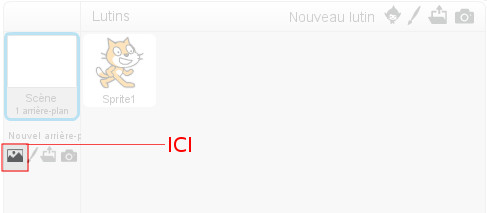
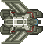
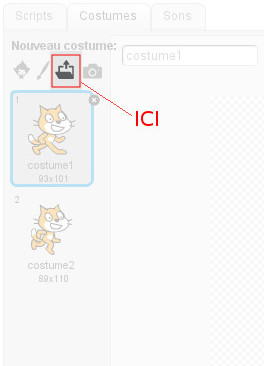
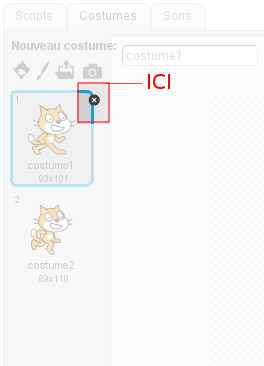

Scratch : initiation à l'algorithmique
TP1 : Découverte de Scratch
Objectif
Scratch est un langage de programmation graphique qui permet de réaliser rapidement des petits jeux vidéos et des décors animés. Nous allons l'utiliser pour créer une version simplifiée d'un très vieux jeu vidéo, Asteroids, édité par Atari en 1979.
Le joueur contrôle un vaisseau spatial, qui doit affronter astéroïdes et soucoupes volantes. Le but est de survivre le plus longtemps possible. L'aire de jeu est intégralement représentée à l'écran. Le joueur peut :
- faire pivoter le vaisseau à droite
- faire pivoter le vaisseau à gauche
- accélérer
- tirer
- se téléporter aléatoirement, à ses risques et périls
Les soucoupes volantes sont de deux tailles, les plus imposantes peuvent tirer mais rapportent davantage de points. Une fois tous les asteroïdes détruits, le joueur passe au niveau suivant....qui contient davantage d'asteroïdes.
Utilisation de Scratch
Scratch est accessible en ligne, à l'adresse : https://scratch.mit.edu/projects/editor/?tip_bar=getStarted
Interface
Lorsqu'on accède à l'application Scratch, on obtient le contenu suivant:

Cette fenêtre comporte 3 zones importantes :
- Une zone d'affichage : c'est là où vous verrez le résultat produit par votre programme.
- Une zone dans laquelle se trouvent les blocs d'actions élémentaires classés en différentes catégories. C'est en associant ces blocs entre eux, que vous allez créer vos programmes. Les blocs utiles au TP sont listés dans la colonne de droite.
- L'éditeur, c'est-à-dire là où vous allez déposer les blocs élémentaires pour implémenter votre algorithme.
Attention
Pensez à sauvegarder régulièrement votre travail : Fichier->Télécharger dans votre ordinateur.
Perdu dans l'espace
- Créer un répertoire "TP_Asteroides" qui contiendra tous les fichiers relatifs à ce TP
- Revenez sur la page web de Scratch
- Commencez par choisir un fond pour votre jeu, en cliquant sur le bouton , à gauche 
- Vous pouvez prendre le fond "stars"
- Le fond se rajoute dans la liste des arrière-plans, à droite de la zone d'affichage.
- Supprimez le premier arrière-plan tout blanc (backdrop1) en cliquant sur la croix en haut à droite
- Au milieu de la zone d'affichage et en bas, vous voyez une image de chat : c'est un personnage dont on peut coder le comportement. En ce qui nous concerne nous voulons un vaisseau spatial plutôt qu'un chat.
- Dans le répertoire TP_Asteroides, créez un répertoire Images_Asteroides.
- Téléchargez l'image suivante et enregistrez-la dans le répertoire Images_Asteroides que vous venez de créer : 
- Cliquez sur le chat puis ouvrez son menu Costume
- Dans ce menu, cliquez sur le bouton pour ajouter un nouveau costume, à partir d'un fichier stocké sur votre ordinateur 
- Sélectionnez l'image que vous venez d'enregistrer
- Supprimez les costumes de chat, en cliquant sur la croix en haut à droite 
Un vaisseau apparaît, à peu près au milieu de l'écran. Commençons par créer un programme qui le positionne correctement et diminue un peu sa taille.
- Quittez le menu Costumes et sélectionnez le menu Scripts
- Sélectionnez la catégorie de scripts Evènements
- Sélectionnez le bloc. Ce bloc indique que le code doit être exécuté quand l'utilisateur clique sur le drapeau vert
- Sélectionnez la catégorie de scripts Apparence
- Sélectionnez le bloc , qui précise la taille du vaisseau. Pour le moment cette taille correspond à 100% de la taille initiale. Réduisez-la à 80%.
- Cliquez sur le drapeau vert pour vérifier que la taille du vaisseau diminue bien
Exercice 1
Dans l'onglet Scripts, sélectionnez la catégorie Mouvement. Plusieurs blocs apparaissent, qui permettent de faire avancer le vaisseau ou de changer sa direction en le tournant. Nous allons les utiliser pour faire bouger le vaisseau. Pensez à consulter la colonne de droite, pour voir lesquels nous vous recommandons.
- Positionnez le vaisseau au centre de l'écran, c'est-à-dire au point de coordonnées (0,0)
- Orientez le vaisseau vers la droite
- Faites-le avancer de 100 pixels
- Sauvegardez votre travail dans le répertoire TP_Asteroides, dans un fichier nommé "asteroides_TP1_exo1" et appelez votre enseignant pour évaluez votre travail.
Vous allez sans doute remarquer qu'il n'est pas évident de voir le déplacement du vaisseau. Nous allons utiliser le pinceau pour tracer le déplacement du vaisseau, histoire de s'assurer que tout se passe bien.
Pour le jeu final, nous enlèverons ces tracés qui ne sont pas jolis. Cette
étape intermédiaire qui vise à chercher les erreurs dans un programme est primordiale
(vous n'avez pas envie de prendre l'avion en espérant que les informaticiens n'aient
pas commis d'erreurs...) et s'appelle le debogage.
Un bon informaticien n'est pas quelqu'un qui ne commet pas d'erreur, c'est
quelqu'un qui sait les trouver avant que le client ne teste son programme :-).
- Allez dans la catégorie de scripts Stylo
- Avant que le vaisseau ne commence à avancer, donnez-lui une taille de 10
- Avant que le vaisseau ne commence à avancer, donnez-lui une couleur de 0 (rouge)
- Avant que le vaisseau ne commence à avancer, mettez le stylo en position d'écriture
- Testez votre programme
- Tournez votre vaisseau vers le haut et testez
- Sauvegardez votre travail dans le répertoire TP_Asteroides, dans un fichier nommé "asteroides_TP1_exo1".
Si vous n'avez pas effacé votre précédent tracé, vous le voyez qui reste à l'écran et perturbe le débogage. Pensez à effacer l'écran, pour y voir plus clair, par exemple juste avant de positionner le vaisseau.
- Ecrivez le programme permettant au vaisseau de tracer un L.
- Sauvegardez votre travail dans le répertoire TP_Asteroides, dans un fichier nommé asteroides_TP1_L" et appelez votre enseignant pour évaluez votre travail.
- Ecrivez le programme permettant au vaisseau de tracer un carré.
- Sauvegardez votre travail dans le répertoire TP_Asteroides, dans un fichier nommé asteroides_TP1_carre.